Load the FiveThirtyEight president polls from https://projects.fivethirtyeight.com/polls/data/president_polls.csv
into an object called president_polls. Remove polls that
are not part of the 2024 president elections. Keep only the polls that
are “general” elections and target a specific state. Also, only keep
polls that have Biden or Trump as the candidate.
president_polls <- read_csv("https://projects.fivethirtyeight.com/polls/data/president_polls.csv")
president_polls <- president_polls |> filter(cycle == 2024 & stage == "general" & !is.na(state) & candidate_name %in% c("Joe Biden", "Donald Trump"))
president_polls## # A tibble: 306 × 42
## poll_id pollster_id pollster spons…¹ spons…² displ…³ polls…⁴ polls…⁵ fte_g…⁶
## <dbl> <dbl> <chr> <dbl> <chr> <chr> <dbl> <chr> <chr>
## 1 81693 1672 Victory … NA <NA> Victor… 673 Victor… <NA>
## 2 81693 1672 Victory … NA <NA> Victor… 673 Victor… <NA>
## 3 81693 1672 Victory … NA <NA> Victor… 673 Victor… <NA>
## 4 81636 460 SurveyUSA 761 WNYT-TV Survey… 325 Survey… A
## 5 81636 460 SurveyUSA 761 WNYT-TV Survey… 325 Survey… A
## 6 81625 1477 Targoz M… 1477 PollSm… Targoz… 454 Targoz… B/C
## 7 81625 1477 Targoz M… 1477 PollSm… Targoz… 454 Targoz… B/C
## 8 81625 1477 Targoz M… 1477 PollSm… Targoz… 454 Targoz… B/C
## 9 81625 1477 Targoz M… 1477 PollSm… Targoz… 454 Targoz… B/C
## 10 81626 1477 Targoz M… 1477 PollSm… Targoz… 454 Targoz… B/C
## # … with 296 more rows, 33 more variables: methodology <chr>, state <chr>,
## # start_date <chr>, end_date <chr>, sponsor_candidate_id <dbl>,
## # sponsor_candidate <chr>, sponsor_candidate_party <chr>, question_id <dbl>,
## # sample_size <dbl>, population <chr>, subpopulation <lgl>,
## # population_full <chr>, tracking <lgl>, created_at <chr>, notes <chr>,
## # url <chr>, source <dbl>, internal <lgl>, partisan <chr>, race_id <dbl>,
## # cycle <dbl>, office_type <chr>, seat_number <dbl>, seat_name <lgl>, …Look at a table of the fte_grade given to each of the
polls. Filter the president_polls data set to keep only
polls with a grade in the top 10 grades, up to C.
president_polls <- president_polls |> filter(fte_grade <= "C" | fte_grade == "C+")
president_polls## # A tibble: 258 × 42
## poll_id pollster_id pollster spons…¹ spons…² displ…³ polls…⁴ polls…⁵ fte_g…⁶
## <dbl> <dbl> <chr> <dbl> <chr> <chr> <dbl> <chr> <chr>
## 1 81636 460 SurveyUSA 761 WNYT-TV Survey… 325 Survey… A
## 2 81636 460 SurveyUSA 761 WNYT-TV Survey… 325 Survey… A
## 3 81625 1477 Targoz M… 1477 PollSm… Targoz… 454 Targoz… B/C
## 4 81625 1477 Targoz M… 1477 PollSm… Targoz… 454 Targoz… B/C
## 5 81625 1477 Targoz M… 1477 PollSm… Targoz… 454 Targoz… B/C
## 6 81625 1477 Targoz M… 1477 PollSm… Targoz… 454 Targoz… B/C
## 7 81626 1477 Targoz M… 1477 PollSm… Targoz… 454 Targoz… B/C
## 8 81626 1477 Targoz M… 1477 PollSm… Targoz… 454 Targoz… B/C
## 9 81626 1477 Targoz M… 1477 PollSm… Targoz… 454 Targoz… B/C
## 10 81626 1477 Targoz M… 1477 PollSm… Targoz… 454 Targoz… B/C
## # … with 248 more rows, 33 more variables: methodology <chr>, state <chr>,
## # start_date <chr>, end_date <chr>, sponsor_candidate_id <dbl>,
## # sponsor_candidate <chr>, sponsor_candidate_party <chr>, question_id <dbl>,
## # sample_size <dbl>, population <chr>, subpopulation <lgl>,
## # population_full <chr>, tracking <lgl>, created_at <chr>, notes <chr>,
## # url <chr>, source <dbl>, internal <lgl>, partisan <chr>, race_id <dbl>,
## # cycle <dbl>, office_type <chr>, seat_number <dbl>, seat_name <lgl>, …Make a table showing how many states have available poll data and what race_id is it.
temp <- president_polls |> distinct(across(c(race_id, state, candidate_id)))
temp <- temp |> group_by(race_id, state) |> summarize(candidates = length(candidate_id))
temp## # A tibble: 32 × 3
## # Groups: race_id [32]
## race_id state candidates
## <dbl> <chr> <int>
## 1 8755 Arkansas 2
## 2 8759 Arizona 2
## 3 8765 Colorado 2
## 4 8768 Connecticut 2
## 5 8778 Florida 2
## 6 8781 Georgia 2
## 7 8788 Iowa 2
## 8 8794 Illinois 2
## 9 8800 Kansas 2
## 10 8806 Louisiana 2
## # … with 22 more rowsTo make the following processing easier, change the name of the candidates to “Biden” and “Trump” respectively.
president_polls["candidate_name"][president_polls["candidate_name"] == "Joe Biden"] = "Biden"
president_polls["candidate_name"][president_polls["candidate_name"] == "Donald Trump"] = "Trump"Identify the columns we need to remove for pivot_wider
to work and remove them. After removing these columns, use
pivot_wider to create columns called Biden and
Trump for the Democrat and Republican poll percentage,
respectively.
president_polls <- president_polls |> select(c(-answer, -candidate_id, -party)) |> pivot_wider(names_from = "candidate_name", values_from = "pct")
president_polls## # A tibble: 142 × 39
## poll_id pollster_id pollster spons…¹ spons…² displ…³ polls…⁴ polls…⁵ fte_g…⁶
## <dbl> <dbl> <chr> <dbl> <chr> <chr> <dbl> <chr> <chr>
## 1 81636 460 SurveyUSA 761 WNYT-TV Survey… 325 Survey… A
## 2 81625 1477 Targoz M… 1477 PollSm… Targoz… 454 Targoz… B/C
## 3 81625 1477 Targoz M… 1477 PollSm… Targoz… 454 Targoz… B/C
## 4 81626 1477 Targoz M… 1477 PollSm… Targoz… 454 Targoz… B/C
## 5 81626 1477 Targoz M… 1477 PollSm… Targoz… 454 Targoz… B/C
## 6 81627 1477 Targoz M… 1477 PollSm… Targoz… 454 Targoz… B/C
## 7 81627 1477 Targoz M… 1477 PollSm… Targoz… 454 Targoz… B/C
## 8 81628 1477 Targoz M… 1477 PollSm… Targoz… 454 Targoz… B/C
## 9 81628 1477 Targoz M… 1477 PollSm… Targoz… 454 Targoz… B/C
## 10 81544 1102 Emerson … NA <NA> Emerso… 88 Emerso… A-
## # … with 132 more rows, 30 more variables: methodology <chr>, state <chr>,
## # start_date <chr>, end_date <chr>, sponsor_candidate_id <dbl>,
## # sponsor_candidate <chr>, sponsor_candidate_party <chr>, question_id <dbl>,
## # sample_size <dbl>, population <chr>, subpopulation <lgl>,
## # population_full <chr>, tracking <lgl>, created_at <chr>, notes <chr>,
## # url <chr>, source <dbl>, internal <lgl>, partisan <chr>, race_id <dbl>,
## # cycle <dbl>, office_type <chr>, seat_number <dbl>, seat_name <lgl>, …Notice that there are some rows that either miss record for the supporting rate for Biden or the supporting rate for Trump. Let’s show these rows.
temp <- president_polls |> filter(is.na(Biden) | is.na(Trump)) |> select(pollster_id, question_id, Biden, Trump)
temp## # A tibble: 26 × 4
## pollster_id question_id Biden Trump
## <dbl> <dbl> <dbl> <dbl>
## 1 383 163416 NA 42
## 2 1102 163285 37.6 NA
## 3 458 161811 43.6 NA
## 4 458 161813 NA 45.6
## 5 1102 161438 38.4 NA
## 6 1302 161201 43 NA
## 7 1302 161203 42 NA
## 8 1302 161204 47 NA
## 9 1302 161205 39 NA
## 10 1302 161206 33 NA
## # … with 16 more rowsAccording to the above table, we can see that it is the different question_id that prevent the rows from merging. Since there are not too many rows affected by this and there are only the supporting rate for Biden for most rows, I decide to remove all rows with missing supporting rate for either candidate.
president_polls <- president_polls |> filter(!is.na(Biden) & !is.na(Trump))Now define a new column spread as
(Biden-Trump)/100.
president_polls <- president_polls |> mutate(spread = (Biden - Trump) / 100)
president_polls## # A tibble: 116 × 40
## poll_id pollster_id pollster spons…¹ spons…² displ…³ polls…⁴ polls…⁵ fte_g…⁶
## <dbl> <dbl> <chr> <dbl> <chr> <chr> <dbl> <chr> <chr>
## 1 81636 460 SurveyUSA 761 WNYT-TV Survey… 325 Survey… A
## 2 81625 1477 Targoz M… 1477 PollSm… Targoz… 454 Targoz… B/C
## 3 81625 1477 Targoz M… 1477 PollSm… Targoz… 454 Targoz… B/C
## 4 81626 1477 Targoz M… 1477 PollSm… Targoz… 454 Targoz… B/C
## 5 81626 1477 Targoz M… 1477 PollSm… Targoz… 454 Targoz… B/C
## 6 81627 1477 Targoz M… 1477 PollSm… Targoz… 454 Targoz… B/C
## 7 81627 1477 Targoz M… 1477 PollSm… Targoz… 454 Targoz… B/C
## 8 81628 1477 Targoz M… 1477 PollSm… Targoz… 454 Targoz… B/C
## 9 81628 1477 Targoz M… 1477 PollSm… Targoz… 454 Targoz… B/C
## 10 81544 1102 Emerson … NA <NA> Emerso… 88 Emerso… A-
## # … with 106 more rows, 31 more variables: methodology <chr>, state <chr>,
## # start_date <chr>, end_date <chr>, sponsor_candidate_id <dbl>,
## # sponsor_candidate <chr>, sponsor_candidate_party <chr>, question_id <dbl>,
## # sample_size <dbl>, population <chr>, subpopulation <lgl>,
## # population_full <chr>, tracking <lgl>, created_at <chr>, notes <chr>,
## # url <chr>, source <dbl>, internal <lgl>, partisan <chr>, race_id <dbl>,
## # cycle <dbl>, office_type <chr>, seat_number <dbl>, seat_name <lgl>, …Use the mdy function in the lubridate
package to mutate the start and end date columns in place to be Dates
instead of characters.
president_polls["start_date"] <- mdy(president_polls$start_date)
president_polls["end_date"] <- mdy(president_polls$end_date)
president_polls## # A tibble: 116 × 40
## poll_id pollster_id pollster spons…¹ spons…² displ…³ polls…⁴ polls…⁵ fte_g…⁶
## <dbl> <dbl> <chr> <dbl> <chr> <chr> <dbl> <chr> <chr>
## 1 81636 460 SurveyUSA 761 WNYT-TV Survey… 325 Survey… A
## 2 81625 1477 Targoz M… 1477 PollSm… Targoz… 454 Targoz… B/C
## 3 81625 1477 Targoz M… 1477 PollSm… Targoz… 454 Targoz… B/C
## 4 81626 1477 Targoz M… 1477 PollSm… Targoz… 454 Targoz… B/C
## 5 81626 1477 Targoz M… 1477 PollSm… Targoz… 454 Targoz… B/C
## 6 81627 1477 Targoz M… 1477 PollSm… Targoz… 454 Targoz… B/C
## 7 81627 1477 Targoz M… 1477 PollSm… Targoz… 454 Targoz… B/C
## 8 81628 1477 Targoz M… 1477 PollSm… Targoz… 454 Targoz… B/C
## 9 81628 1477 Targoz M… 1477 PollSm… Targoz… 454 Targoz… B/C
## 10 81544 1102 Emerson … NA <NA> Emerso… 88 Emerso… A-
## # … with 106 more rows, 31 more variables: methodology <chr>, state <chr>,
## # start_date <date>, end_date <date>, sponsor_candidate_id <dbl>,
## # sponsor_candidate <chr>, sponsor_candidate_party <chr>, question_id <dbl>,
## # sample_size <dbl>, population <chr>, subpopulation <lgl>,
## # population_full <chr>, tracking <lgl>, created_at <chr>, notes <chr>,
## # url <chr>, source <dbl>, internal <lgl>, partisan <chr>, race_id <dbl>,
## # cycle <dbl>, office_type <chr>, seat_number <dbl>, seat_name <lgl>, …Now let’s see how many polls we have for each state.
president_polls |> group_by(state) |> summarize(count = length(state)) |> arrange(-count)## # A tibble: 32 × 2
## state count
## <chr> <int>
## 1 Georgia 9
## 2 Missouri 8
## 3 Arizona 7
## 4 New Hampshire 7
## 5 Ohio 7
## 6 Pennsylvania 7
## 7 Florida 6
## 8 Iowa 6
## 9 New York 6
## 10 North Carolina 6
## # … with 22 more rowsFor states with available polls > 6, let’s see how Biden and Trump’s supporting rates change with respect to time.
get_plot <- function(target_state){
president_polls |> filter(state == target_state) |> ggplot(aes(x = start_date)) + geom_line(aes(y = Biden, colour = "Biden")) + geom_line(aes(y = Trump, colour = "Trump")) + xlab("Date") + ylab("Supporting rate") + ggtitle(target_state) + scale_colour_manual("",
breaks = c("Biden", "Trump"),
values = c("blue", "red")) + theme(legend.key.size = unit(0.5, 'cm'), #change legend key size
legend.key.height = unit(0.5, 'cm'), #change legend key height
legend.key.width = unit(0.5, 'cm'), #change legend key width
legend.title = element_text(size=20), #change legend title font size
legend.text = element_text(size=10), #change legend text font size
plot.title = element_text(hjust = 0.5))
}get_plot("Georgia")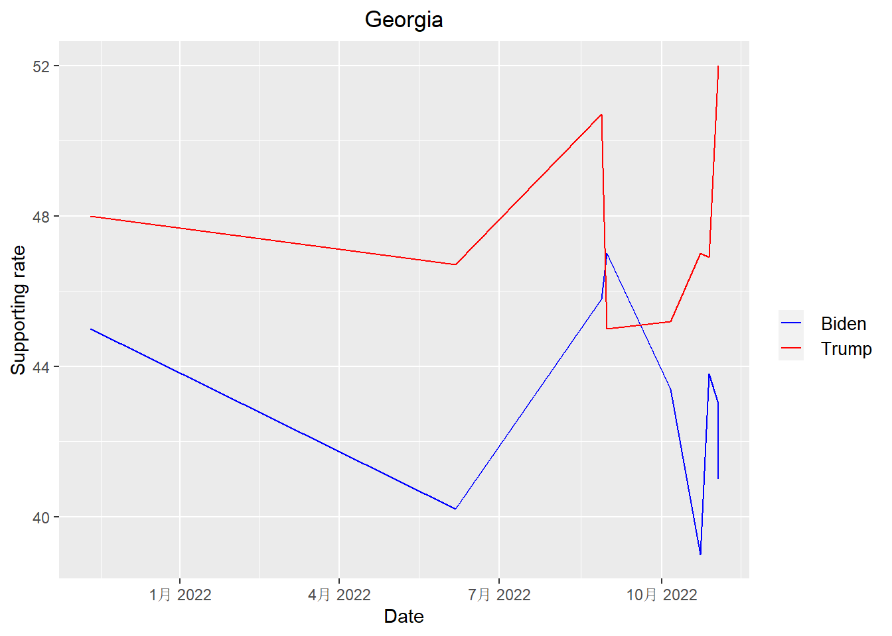
get_plot("Missouri")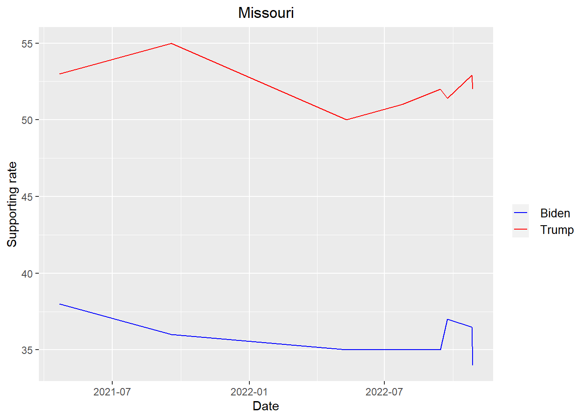
get_plot("Arizona")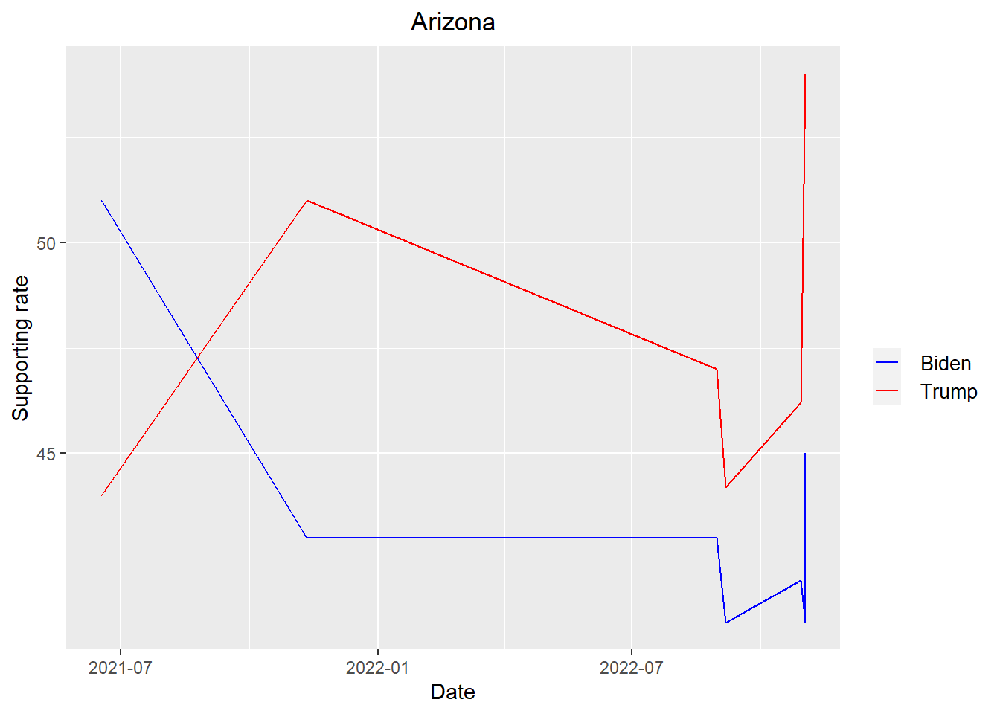
get_plot("New Hampshire")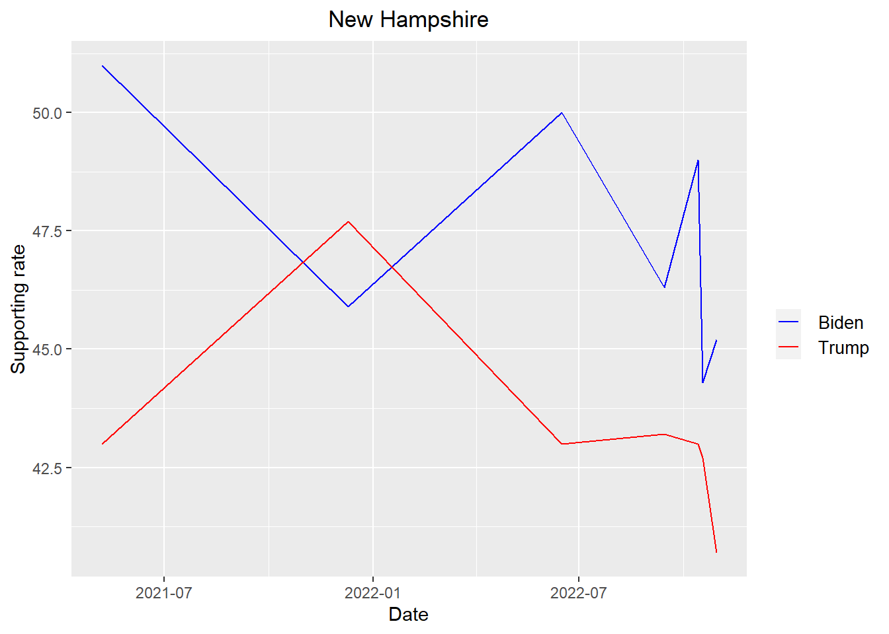
get_plot("Pennsylvania")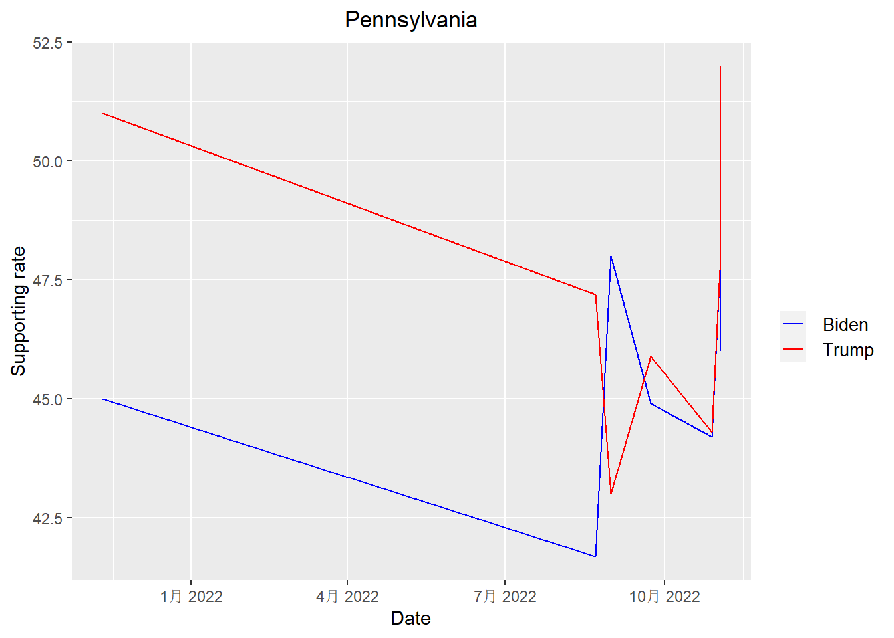
get_plot("Ohio")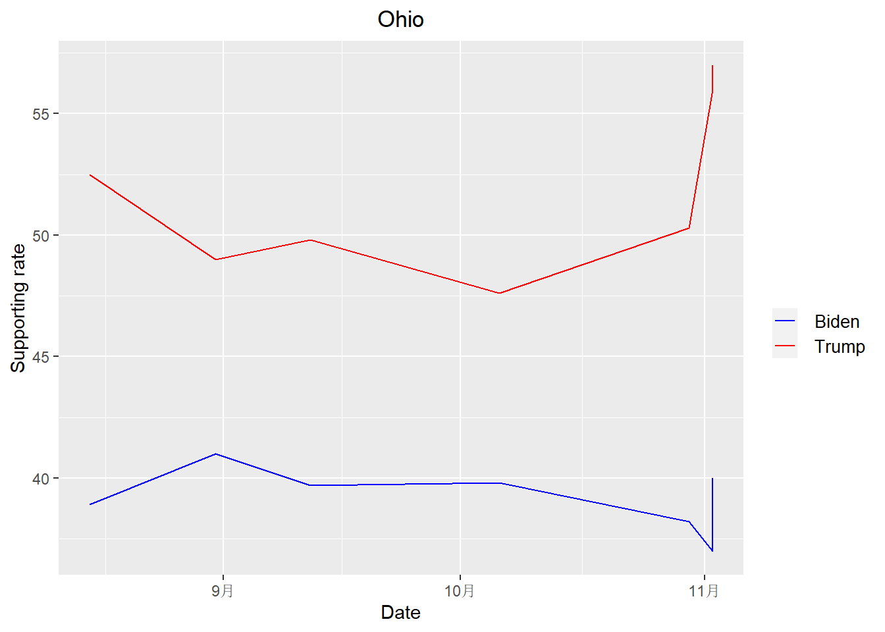
According to the plots above, we can see that Trump is leading Biden in all states except New Hampshire when it come to the midterm election
Now calculate the mean and the standard deviation of the spread for each state. Since there are still two years before the 2024 presidential election and I do not have a lot of polls for some states, I decide to keep all the states that I have at least two polls available.
results <- president_polls |> group_by(race_id, state) |> summarize(average = mean(spread), standard_deviation = sd(spread), count = length(unique(poll_id))) |> select(race_id, state, average, standard_deviation, count) |> filter(count > 1)
results ## # A tibble: 23 × 5
## # Groups: race_id [23]
## race_id state average standard_deviation count
## <dbl> <chr> <dbl> <dbl> <int>
## 1 8759 Arizona -0.0477 0.0620 6
## 2 8765 Colorado 0.085 0.0184 2
## 3 8768 Connecticut 0.118 0.0210 3
## 4 8778 Florida -0.0145 0.0540 6
## 5 8781 Georgia -0.0503 0.0403 8
## 6 8788 Iowa -0.114 0.0219 6
## 7 8794 Illinois 0.112 0.0195 3
## 8 8800 Kansas -0.135 0.0240 3
## 9 8811 Massachusetts 0.251 0.0442 3
## 10 8820 Michigan -0.0275 0.0672 4
## # … with 13 more rowsPlot the results with confidence intervals assuming the average is
t-distributed. Put state on the y-axis and the average along the x-axis,
using geom_errorbar to specify the confidence interval
width about the average. Order the states by the absolute value of the
average difference so the closer races are on top. Color them blue if
Biden is winning and red if Trump is winning (don’t show a legend).
# Calculate 95% confidence interval
standard_error <- results$standard_deviation / sqrt(results$count)
alpha <- 0.05
degrees_of_freedom <- results$count - 1
t_score = qt(p=alpha/2, df=degrees_of_freedom,lower.tail=F)
margin_error <- t_score * standard_error
lower_bound <- results$average - margin_error
upper_bound <- results$average + margin_error
results |> ggplot(aes(x = average, y = reorder(state, -abs(average)))) + geom_point(aes(col = ifelse(average > 0, "blue", ifelse(average < 0, "red", "black"))), size = 3) + geom_errorbar(aes(xmin = lower_bound, xmax = upper_bound, colour = ifelse(average > 0, "blue", ifelse(average < 0, "red", "black")))) + scale_color_manual(values = c("blue" = "blue", "red"="red", "black"="black")) + xlab("Average") + ylab("States") + ggtitle("Poll by state") + theme(legend.position="none") + theme(plot.title = element_text(hjust = 0.5))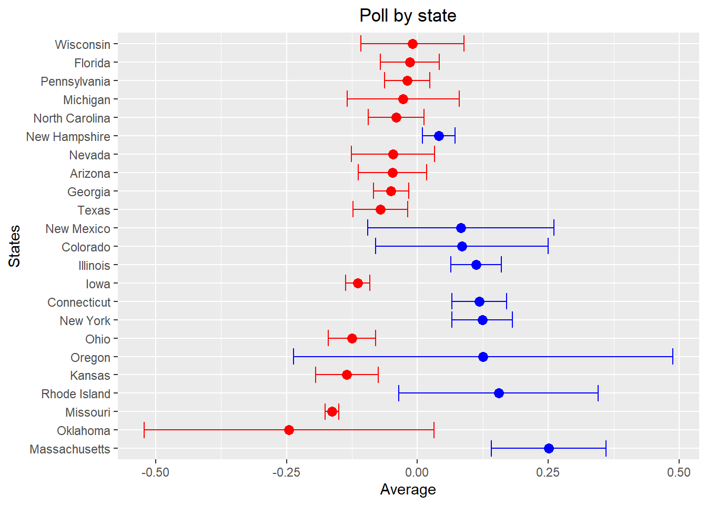
Now comes the important part. We need to predict how many electoral votes that Biden will win in the 2024 presidential election, so we need a table showing how many electoral votes that each state has. According to the demographic census in 2020, the electoral votes for each state have been updated and will firstly take effect in the 2024 presidential election. Below is the how I extract the table from the website.
The table is located in the following website: https://state.1keydata.com/state-electoral-votes.php
url <- "https://state.1keydata.com/state-electoral-votes.php"
dat <- read_html(url)Use the html_nodes function and the table
node to extract the table we need.
nodes <- dat |> html_nodes("table")
nodes## {xml_nodeset (11)}
## [1] <table border="0" class="container" cellpadding="0" cellspacing="10" bgc ...
## [2] <table border="0" cellpadding="0" bgcolor="FFFFFF"><tr valign="top"><td> ...
## [3] <table border="1" width="80%" class="content1">\n<tr bgcolor="0033FF">\n ...
## [4] <table border="1" class="content2">\n<tr bgcolor="0033FF">\n<td><center> ...
## [5] <table border="1" width="80%" class="content1">\n<tr bgcolor="0033FF">\n ...
## [6] <table border="1" width="80%" class="content1">\n<tr bgcolor="0033FF">\n ...
## [7] <table border="0" cellpadding="0" cellspacing="0" width="100%"><tr>\n<td ...
## [8] <table border="0" cellpadding="0" cellspacing="0" width="100%"><tr>\n<td ...
## [9] <table border="1" width="80%" class="content1">\n<tr bgcolor="0033FF">\n ...
## [10] <table border="0" cellpadding="0" cellspacing="0" width="100%"><tr>\n<td ...
## [11] <table border="1" width="80%" class="content1">\n<tr bgcolor="0033FF">\n ...Our table of interest is the fourth table, so we extract it below and do some modifications.
votes <- html_table(nodes[[4]], header = TRUE) |> select(2, 3)
colnames(votes)[1] <- 'state'
colnames(votes)[2] <- 'electoral_votes'
votes## # A tibble: 50 × 2
## state electoral_votes
## <chr> <int>
## 1 California 54
## 2 Texas 40
## 3 Florida 30
## 4 New York 28
## 5 Illinois 19
## 6 Pennsylvania 19
## 7 Ohio 17
## 8 Georgia 16
## 9 North Carolina 16
## 10 Michigan 15
## # … with 40 more rowsThe table above does not include District of Columbia, which has 3 electoral votes, so I add it into the table.
add <- data.frame("District of Columbia", 3)
names(add)=c("state","electoral_votes")
votes <- votes |> rbind(add) |> arrange(-electoral_votes, state)
votes## # A tibble: 51 × 2
## state electoral_votes
## <chr> <dbl>
## 1 California 54
## 2 Texas 40
## 3 Florida 30
## 4 New York 28
## 5 Illinois 19
## 6 Pennsylvania 19
## 7 Ohio 17
## 8 Georgia 16
## 9 North Carolina 16
## 10 Michigan 15
## # … with 41 more rowsLet’s see how many electoral votes will be needed to win the 2024 presidential election.
total <- sum(votes$electoral_votes)
print(paste(total %/% 2 + 1, " electoral votes are needed to win the 2024 presidential election"))## [1] "270 electoral votes are needed to win the 2024 presidential election"Join this table and the “results” table above.
results <- left_join(results, votes, by = "state")
results## # A tibble: 23 × 6
## # Groups: race_id [23]
## race_id state average standard_deviation count electoral_votes
## <dbl> <chr> <dbl> <dbl> <int> <dbl>
## 1 8759 Arizona -0.0477 0.0620 6 11
## 2 8765 Colorado 0.085 0.0184 2 10
## 3 8768 Connecticut 0.118 0.0210 3 7
## 4 8778 Florida -0.0145 0.0540 6 30
## 5 8781 Georgia -0.0503 0.0403 8 16
## 6 8788 Iowa -0.114 0.0219 6 6
## 7 8794 Illinois 0.112 0.0195 3 19
## 8 8800 Kansas -0.135 0.0240 3 6
## 9 8811 Massachusetts 0.251 0.0442 3 11
## 10 8820 Michigan -0.0275 0.0672 4 15
## # … with 13 more rowsNow implement a Bayesian approach. Firstly, let’s use a basic prior (\(\mu = 0\), \(\sigma = 0.04\)) assuming no knowledge about the historical elections and the election trends.
mu <- 0.00
tau <- 0.04
results_no_bias <- results |> mutate(prior_average = mu,
prior_sd = tau,
sigma = standard_deviation/sqrt(count),
B = sigma^2 / (sigma^2 + tau^2),
posterior_mean = B * mu + (1 - B) * average,
posterior_sd = sqrt(1/ (1/sigma^2 + 1/tau^2)),
Biden_win_prob = 1-pnorm(0, posterior_mean, posterior_sd)) |> select(-sigma, -B)
results_no_bias## # A tibble: 23 × 11
## # Groups: race_id [23]
## race_id state average stand…¹ count elect…² prior…³ prior…⁴ poste…⁵ poste…⁶
## <dbl> <chr> <dbl> <dbl> <int> <dbl> <dbl> <dbl> <dbl> <dbl>
## 1 8759 Arizona -0.0477 0.0620 6 11 0 0.04 -0.0341 0.0214
## 2 8765 Colora… 0.085 0.0184 2 10 0 0.04 0.0769 0.0124
## 3 8768 Connec… 0.118 0.0210 3 7 0 0.04 0.108 0.0116
## 4 8778 Florida -0.0145 0.0540 6 30 0 0.04 -0.0111 0.0193
## 5 8781 Georgia -0.0503 0.0403 8 16 0 0.04 -0.0447 0.0134
## 6 8788 Iowa -0.114 0.0219 6 6 0 0.04 -0.109 0.00872
## 7 8794 Illino… 0.112 0.0195 3 19 0 0.04 0.104 0.0108
## 8 8800 Kansas -0.135 0.0240 3 6 0 0.04 -0.120 0.0131
## 9 8811 Massac… 0.251 0.0442 3 11 0 0.04 0.178 0.0215
## 10 8820 Michig… -0.0275 0.0672 4 15 0 0.04 -0.0161 0.0257
## # … with 13 more rows, 1 more variable: Biden_win_prob <dbl>, and abbreviated
## # variable names ¹standard_deviation, ²electoral_votes, ³prior_average,
## # ⁴prior_sd, ⁵posterior_mean, ⁶posterior_sdShow a table of states with the probability (in percentages) of the Biden winning ordered by that probability. If a probability is larger than 99%, show >99%, and if smaller than 1% then show <1%.
temp <- results_no_bias |> select(state, Biden_win_prob) |> mutate(Biden_win = paste(as.character(round(100 * Biden_win_prob, 2)), "%")) |> arrange(-Biden_win_prob)
temp["Biden_win"][temp["Biden_win_prob"] > 0.99] <- "> 99 %"
temp["Biden_win"][temp["Biden_win_prob"] < 0.01] <- "< 1 %"
temp |> select(state, Biden_win)## # A tibble: 23 × 3
## # Groups: race_id [23]
## race_id state Biden_win
## <dbl> <chr> <chr>
## 1 8768 Connecticut > 99 %
## 2 8794 Illinois > 99 %
## 3 8811 Massachusetts > 99 %
## 4 8877 Rhode Island > 99 %
## 5 8765 Colorado > 99 %
## 6 8854 New Mexico > 99 %
## 7 8860 New York > 99 %
## 8 8869 Oregon > 99 %
## 9 8848 New Hampshire > 99 %
## 10 8905 Wisconsin 40.14 %
## # … with 13 more rowsNote that there are several states that do not appear in the “results_no_bias” table above. This is because the election in these states are usually certain. As a result, I use the following strategy. If the state is not in the “results_no_bias” table, I consider the election results in these states are certain and count the electoral votes towards their party affiliation. To get the party affiliation, I extracted the following table from https://www.pewresearch.org/religion/religious-landscape-study/compare/party-affiliation/by/state/ using the similar web scraping strategy mentioned above.
url <- "https://www.pewresearch.org/religion/religious-landscape-study/compare/party-affiliation/by/state/"
dat <- read_html(url)
nodes <- dat |> html_nodes("table")
nodes## {xml_nodeset (1)}
## [1] <table class="ui\tcelled table" data-iframe-height>\n<thead><tr>\n<th>Sta ...affiliation <- html_table(nodes[[1]], header = TRUE)
colnames(affiliation)[1] <- 'state'
colnames(affiliation)[2] <- 'Rep'
colnames(affiliation)[3] <- 'None'
colnames(affiliation)[4] <- 'Dem'
affiliation## # A tibble: 51 × 5
## state Rep None Dem `Sample\tsize`
## <chr> <chr> <chr> <chr> <chr>
## 1 Alabama 52% 13% 35% 511
## 2 Alaska 39% 29% 32% 310
## 3 Arizona 40% 21% 39% 653
## 4 Arkansas 46% 16% 38% 311
## 5 California 30% 21% 49% 3,697
## 6 Colorado 41% 17% 42% 504
## 7 Connecticut 32% 18% 50% 377
## 8 Delaware 29% 17% 55% 301
## 9 District of Columbia 11% 15% 73% 303
## 10 Florida 37% 19% 44% 2,020
## # … with 41 more rowsThe table above shows the percentage of the party affiliation that the adults in the states consider themselves as. Here, I consider the state as a “Blue state” if it has more adults that think they are Democrats. and a “Red state” if it has more adults that think they are Republicans. Otherwise, I label the state as a “White state” since it has no affiliation. As a result, I get the following table.
affiliation <- affiliation |> mutate(affiliation = ifelse(Dem > Rep, "B", ifelse(Rep > Dem, "R", "W"))) |> select(-"Sample size")
affiliation## # A tibble: 51 × 5
## state Rep None Dem affiliation
## <chr> <chr> <chr> <chr> <chr>
## 1 Alabama 52% 13% 35% R
## 2 Alaska 39% 29% 32% R
## 3 Arizona 40% 21% 39% R
## 4 Arkansas 46% 16% 38% R
## 5 California 30% 21% 49% B
## 6 Colorado 41% 17% 42% B
## 7 Connecticut 32% 18% 50% B
## 8 Delaware 29% 17% 55% B
## 9 District of Columbia 11% 15% 73% B
## 10 Florida 37% 19% 44% B
## # … with 41 more rowsNow let’s only keep the states that are not in the “results_no_bias” table since we will use a Monte Carlo simulation to determine the election results in those states.
affiliation <- affiliation |> filter(!state %in% results_no_bias$state)
affiliation## # A tibble: 28 × 5
## state Rep None Dem affiliation
## <chr> <chr> <chr> <chr> <chr>
## 1 Alabama 52% 13% 35% R
## 2 Alaska 39% 29% 32% R
## 3 Arkansas 46% 16% 38% R
## 4 California 30% 21% 49% B
## 5 Delaware 29% 17% 55% B
## 6 District of Columbia 11% 15% 73% B
## 7 Hawaii 28% 20% 51% B
## 8 Idaho 49% 19% 32% R
## 9 Indiana 42% 20% 37% R
## 10 Kentucky 44% 13% 43% R
## # … with 18 more rowsLet’s assume that Biden manage to win in all blue states that remain in the “affiliation” table and lose in all red states that remain in the “affiliation” table. Before using the Monte Carlo simulation, let’s see how many electoral votes that Biden has already won.
affiliation <- left_join(affiliation, votes, by = "state")
total_votes <- affiliation |> filter(affiliation == "B") |> pull(electoral_votes)
Biden_win_electoral_votes <- sum(total_votes)
print(paste("Based on the assumption, Biden has already won ", Biden_win_electoral_votes, " electoral votes"))## [1] "Based on the assumption, Biden has already won 125 electoral votes"Now Create a Monte Carlo simulation of each state’s election using
number of simulations B=10000, where each simulation
outputs the total number of electoral votes that Biden will win in the
2024 presidential election. Assume each state’s election is normally
distributed with the posterior mean and standard error in the
results_no_bias data frame. Show a histogram of the results
for the number of electoral votes.
# We now start the Monte Carlo simulation based on the above result
set.seed(1)
B <- 10000
simulation <- function(){
temp <- c()
for (i in 1:length(results_no_bias$state)){
temp <- c(sample(c(1, 0), size = 1, replace = TRUE, prob = c(pnorm(0, mean = results_no_bias$posterior_mean[i], sd = results_no_bias$posterior_sd[i], lower.tail = FALSE), pnorm(0, mean = results_no_bias$posterior_mean[i], sd = results_no_bias$posterior_sd[i], lower.tail = TRUE))) * results_no_bias$electoral_votes[i], temp)
}
sum(temp) + Biden_win_electoral_votes
}
result_mc <- data.frame(electoral_votes_count = replicate(B, simulation()))
result_mc |> ggplot(aes(x = electoral_votes_count)) + geom_histogram() + xlab("Number of electoral votes Biden wins") + ylab("Count") + ggtitle("Presidential Election Possibilities") + theme(plot.title = element_text(hjust = 0.5))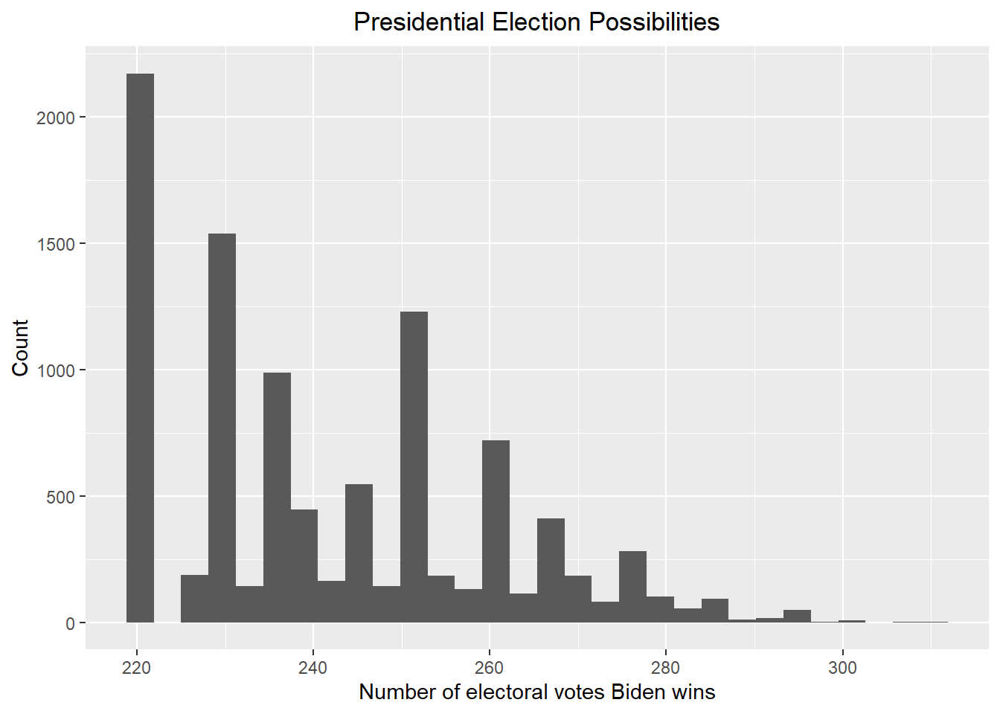
Show the probability that Biden wins the 2024 presidential election, assuming win means 270 or more electoral votes.
print(paste("According to the above plot, the probability that Biden wins the 2024 presidential election is ", round(mean(result_mc >= 270) * 100, 2), "%"))## [1] "According to the above plot, the probability that Biden wins the 2024 presidential election is 8.75 %"Give the 80% credible interval of the 2024 presidential election.
# I use the credible_interval function in the ArchaeoPhases package to get the 80% credible interval
result <- credible_interval(data = result_mc |> pull(electoral_votes_count), level = 0.8, round_to = 0)
print(paste("According to the redible_interval function in the ArchaeoPhases package, the 80% credible interval should be [", result$ci[1], ", ", result$ci[2], "]"))## [1] "According to the redible_interval function in the ArchaeoPhases package, the 80% credible interval should be [ 221 , 261 ]"Now including a bias with average bias_avg and standard
error of bias_sd to add the uncertainty to the
election.
# According to section 16.8.4 in the book, I set bias_sd to be 0.03. I also set bias_avg to be 0.00 since I do not think the bias will go towards either party
mu <- 0.00
tau <- 0.04
bias_avg <- 0.00
bias_sd <- 0.03
results_bias <- results |> mutate(prior_average = mu,
prior_sd = tau,
sigma = sqrt(standard_deviation^2/count + bias_sd^2),
B = sigma^2 / (sigma^2 + tau^2),
posterior_mean = B * mu + (1 - B) * average,
posterior_sd = sqrt(1/ (1/sigma^2 + 1/tau^2)),
Biden_win_prob = 1-pnorm(0, posterior_mean, posterior_sd)) |> select(-sigma, -B)
results_bias## # A tibble: 23 × 11
## # Groups: race_id [23]
## race_id state average stand…¹ count elect…² prior…³ prior…⁴ poster…⁵ poste…⁶
## <dbl> <chr> <dbl> <dbl> <int> <dbl> <dbl> <dbl> <dbl> <dbl>
## 1 8759 Arizo… -0.0477 0.0620 6 11 0 0.04 -0.0243 0.0280
## 2 8765 Color… 0.085 0.0184 2 10 0 0.04 0.0510 0.0253
## 3 8768 Conne… 0.118 0.0210 3 7 0 0.04 0.0713 0.0252
## 4 8778 Flori… -0.0145 0.0540 6 30 0 0.04 -0.00777 0.0273
## 5 8781 Georg… -0.0503 0.0403 8 16 0 0.04 -0.0298 0.0256
## 6 8788 Iowa -0.114 0.0219 6 6 0 0.04 -0.0708 0.0247
## 7 8794 Illin… 0.112 0.0195 3 19 0 0.04 0.0682 0.0250
## 8 8800 Kansas -0.135 0.0240 3 6 0 0.04 -0.0800 0.0255
## 9 8811 Massa… 0.251 0.0442 3 11 0 0.04 0.127 0.0281
## 10 8820 Michi… -0.0275 0.0672 4 15 0 0.04 -0.0121 0.0299
## # … with 13 more rows, 1 more variable: Biden_win_prob <dbl>, and abbreviated
## # variable names ¹standard_deviation, ²electoral_votes, ³prior_average,
## # ⁴prior_sd, ⁵posterior_mean, ⁶posterior_sdPrint out the table of states with Biden’s probabilities of winning. If a probability is larger than 99%, show >99%, and if smaller than 1% then show <1%.
# Print out the table of states with Biden's probabilities of winning
temp <- results_bias |> select(state, Biden_win_prob) |> mutate(Biden_win = paste(as.character(round(100 * Biden_win_prob, 2)), "%"))
temp["Biden_win"][temp["Biden_win_prob"] > 0.99] <- "> 99 %"
temp["Biden_win"][temp["Biden_win_prob"] < 0.01] <- "< 1 %"
temp |> select(state, Biden_win)## # A tibble: 23 × 3
## # Groups: race_id [23]
## race_id state Biden_win
## <dbl> <chr> <chr>
## 1 8759 Arizona 19.28 %
## 2 8765 Colorado 97.79 %
## 3 8768 Connecticut > 99 %
## 4 8778 Florida 38.78 %
## 5 8781 Georgia 12.18 %
## 6 8788 Iowa < 1 %
## 7 8794 Illinois > 99 %
## 8 8800 Kansas < 1 %
## 9 8811 Massachusetts > 99 %
## 10 8820 Michigan 34.26 %
## # … with 13 more rowsNow run a simulation to get a final answer for the total of electoral votes that Biden will win in the 2024 presidential election.
# Use the updated results table to perform the Monte Carlo simulation
set.seed(1)
B <- 10000
simulation <- function(){
temp <- c()
for (i in 1:length(results_bias$state)){
temp <- c(sample(c(1, 0), size = 1, replace = TRUE, prob = c(pnorm(0, mean = results_bias$posterior_mean[i], sd = results_bias$posterior_sd[i], lower.tail = FALSE), pnorm(0, mean = results_bias$posterior_mean[i], sd = results_bias$posterior_sd[i], lower.tail = TRUE))) * results_bias$electoral_votes[i], temp)
}
sum(temp) + Biden_win_electoral_votes
}
result_mc <- data.frame(electoral_votes_count = replicate(B, simulation()))
result_mc |> ggplot(aes(x = electoral_votes_count)) + geom_histogram() + xlab("Number of electoral votes Biden wins") + ylab("Count") + ggtitle("Presidential Election Possibilities") + theme(plot.title = element_text(hjust = 0.5))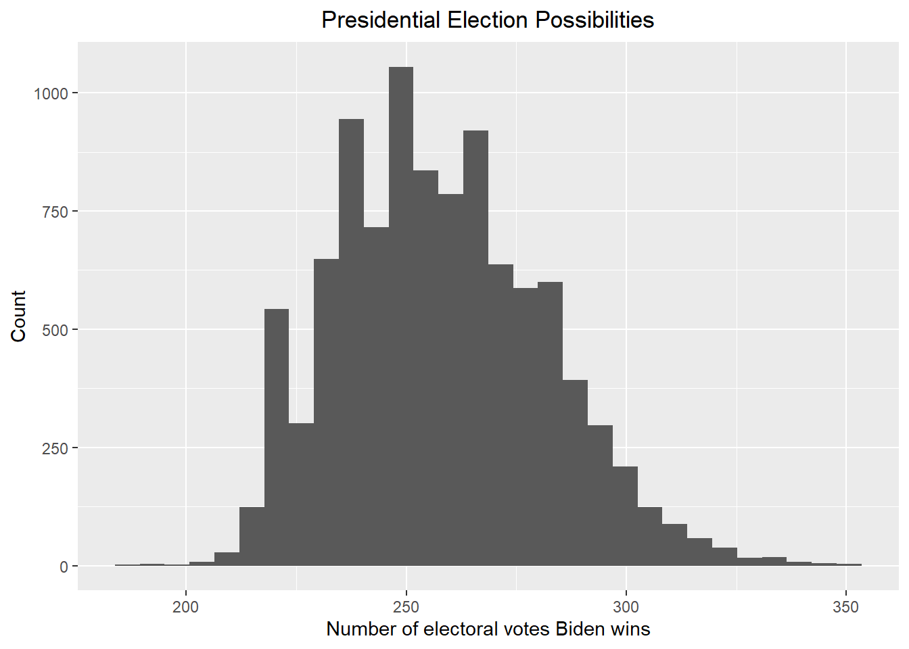
Let’s see now how likely Biden will win against Trump with the new posterior.
print(paste("According to the above plot, the probability that the Democrats control the Senate is ", round(mean(result_mc >= 270) * 100, 2), "%"))## [1] "According to the above plot, the probability that the Democrats control the Senate is 30.45 %"Give the 80% credible interval of the 2024 presidential election.
# I use the credible_interval function in the ArchaeoPhases package to get the 80% credible interval
result <- credible_interval(data = result_mc |> pull(electoral_votes_count), level = 0.8, round_to = 0)
print(paste("According to the redible_interval function in the ArchaeoPhases package, the 80% credible interval should be [", result$ci[1], ", ", result$ci[2], "]"))## [1] "According to the redible_interval function in the ArchaeoPhases package, the 80% credible interval should be [ 227 , 285 ]"According to the above results, by adding a bias term, the election results become more uncertain and Biden’s winning rate increases. However, Biden will still suffer great loss regardless of the bias term is added or not. However, the above results are based on the prior that has no knowledge about the previous presidential elections and we are subjected to limited poll data.
The previous analysis may give a more plausible prediction if we can set a better prior for each state. To achieve this, we use the poll results from the 2020 presidential election. This is because this election is also between Biden and Trump. First, let’s get the data from FiveThirtyEight again and conduct necessary data wrangling. The data is available at https://projects.fivethirtyeight.com/polls/data/president_polls_historical.csv
president_polls_2020 <- read_csv("https://projects.fivethirtyeight.com/polls/data/president_polls_historical.csv")
president_polls_2020 <- president_polls_2020 |> filter(cycle == 2020 & stage == "general" & !is.na(state) & candidate_name %in% c("Joe Biden", "Donald Trump") & fte_grade <= "C" | fte_grade == "C+")
president_polls_2020["start_date"] <- mdy(president_polls_2020$start_date)
president_polls_2020["end_date"] <- mdy(president_polls_2020$end_date)
president_polls_2020["election_date"] <- mdy(president_polls_2020$election_date)
president_polls_2020["candidate_name"][president_polls_2020["candidate_name"] == "Joe Biden"] = "Biden"
president_polls_2020["candidate_name"][president_polls_2020["candidate_name"] == "Donald Trump"] = "Trump"
president_polls_2020## # A tibble: 9,597 × 42
## poll_id pollster_id pollster spons…¹ spons…² displ…³ polls…⁴ polls…⁵ fte_g…⁶
## <dbl> <dbl> <chr> <dbl> <chr> <chr> <dbl> <chr> <chr>
## 1 72621 383 PPP NA <NA> Public… 263 Public… A-
## 2 72621 383 PPP NA <NA> Public… 263 Public… A-
## 3 72647 461 Susqueha… NA <NA> Susque… 326 Susque… B+
## 4 72647 461 Susqueha… NA <NA> Susque… 326 Susque… B+
## 5 72722 235 InsiderA… 364 FOX35 … Inside… 243 Opinio… B
## 6 72722 235 InsiderA… 364 FOX35 … Inside… 243 Opinio… B
## 7 72806 1250 Trafalga… NA <NA> Trafal… 338 Trafal… A-
## 8 72806 1250 Trafalga… NA <NA> Trafal… 338 Trafal… A-
## 9 72861 1250 Trafalga… NA <NA> Trafal… 338 Trafal… A-
## 10 72861 1250 Trafalga… NA <NA> Trafal… 338 Trafal… A-
## # … with 9,587 more rows, 33 more variables: methodology <chr>, state <chr>,
## # start_date <date>, end_date <date>, sponsor_candidate_id <dbl>,
## # sponsor_candidate <chr>, sponsor_candidate_party <chr>, question_id <dbl>,
## # sample_size <dbl>, population <chr>, subpopulation <lgl>,
## # population_full <chr>, tracking <lgl>, created_at <chr>, notes <chr>,
## # url <chr>, source <dbl>, internal <lgl>, partisan <chr>, race_id <dbl>,
## # cycle <dbl>, office_type <chr>, seat_number <dbl>, seat_name <lgl>, …Use “pivot_wider” to merge the rows and create the “spread” column that indicates the supporting rate spread between Biden and Trump.
president_polls_2020 <- president_polls_2020 |> select(c(-answer, -candidate_id, -party)) |> pivot_wider(names_from = "candidate_name", values_from = "pct") |> mutate(spread = (Biden - Trump) / 100) |> filter(!is.na(spread))
president_polls_2020## # A tibble: 4,407 × 44
## poll_id pollster_id pollster spons…¹ spons…² displ…³ polls…⁴ polls…⁵ fte_g…⁶
## <dbl> <dbl> <chr> <dbl> <chr> <chr> <dbl> <chr> <chr>
## 1 72621 383 PPP NA <NA> Public… 263 Public… A-
## 2 72647 461 Susqueha… NA <NA> Susque… 326 Susque… B+
## 3 72722 235 InsiderA… 364 FOX35 … Inside… 243 Opinio… B
## 4 72806 1250 Trafalga… NA <NA> Trafal… 338 Trafal… A-
## 5 72861 1250 Trafalga… NA <NA> Trafal… 338 Trafal… A-
## 6 72862 1250 Trafalga… NA <NA> Trafal… 338 Trafal… A-
## 7 72864 1240 Øptimus NA <NA> Øptimus 245 Optimus B/C
## 8 72754 1613 Universi… NA <NA> Univer… 609 Univer… B/C
## 9 72757 1365 Change R… NA <NA> Change… 48 Change… B-
## 10 72762 1365 Change R… NA <NA> Change… 48 Change… B-
## # … with 4,397 more rows, 35 more variables: methodology <chr>, state <chr>,
## # start_date <date>, end_date <date>, sponsor_candidate_id <dbl>,
## # sponsor_candidate <chr>, sponsor_candidate_party <chr>, question_id <dbl>,
## # sample_size <dbl>, population <chr>, subpopulation <lgl>,
## # population_full <chr>, tracking <lgl>, created_at <chr>, notes <chr>,
## # url <chr>, source <dbl>, internal <lgl>, partisan <chr>, race_id <dbl>,
## # cycle <dbl>, office_type <chr>, seat_number <dbl>, seat_name <lgl>, …After consideration, I think a good prior should be set as a normal distribution since the election result is usually normally distributed. The mean of prior should be the average of the spread within the final month of the election since we want to predict the results that are close to the election day. The standard deviation of the prior should be variance between 2018 to 2020. This is because the earliest poll data from FiveThirtyEight is since 2018 and I want the standard deviation to be relatively large to account for uncertainties since I am predicting the 2024 presidential election using the data in 2022 and a lot can happen during the next two years. Let’s find the mean and the standard deviation of the prior following the definitions above.
temp_1 <- president_polls_2020 |> filter(start_date > election_date - months(1)) |> group_by(state) |> summarize(prior_average = mean(spread)) |> filter(!is.na(prior_average))
temp_1## # A tibble: 54 × 2
## state prior_average
## <chr> <dbl>
## 1 Alabama -0.195
## 2 Alaska -0.0846
## 3 Arizona 0.0349
## 4 Arkansas -0.210
## 5 California 0.278
## 6 Colorado 0.134
## 7 Connecticut 0.239
## 8 Delaware 0.229
## 9 District of Columbia 0.863
## 10 Florida 0.0207
## # … with 44 more rowstemp_2 <- president_polls_2020 |> group_by(state) |> summarize(prior_sd = sd(spread)) |> filter(!is.na(prior_sd))
temp_2## # A tibble: 54 × 2
## state prior_sd
## <chr> <dbl>
## 1 Alabama 0.0464
## 2 Alaska 0.0300
## 3 Arizona 0.0368
## 4 Arkansas 0.0548
## 5 California 0.0380
## 6 Colorado 0.0391
## 7 Connecticut 0.0383
## 8 Delaware 0.0455
## 9 District of Columbia 0.0494
## 10 Florida 0.0317
## # … with 44 more rowsNote that there are more than 50 rows in the tables above. This is because there are polls for some regions of one state, but this does not matter since we only want to have the prior mean and standard deviation that are in “results” table above. Now we add what we have found into the “results” table by joining it with the “temp_1” and “temp_2” table.
updated_results <- left_join(results, temp_1, by = "state")
updated_results <- left_join(updated_results, temp_2, by = "state")
updated_results## # A tibble: 23 × 8
## # Groups: race_id [23]
## race_id state average standard_devia…¹ count elect…² prior_…³ prior…⁴
## <dbl> <chr> <dbl> <dbl> <int> <dbl> <dbl> <dbl>
## 1 8759 Arizona -0.0477 0.0620 6 11 3.49e-2 0.0368
## 2 8765 Colorado 0.085 0.0184 2 10 1.34e-1 0.0391
## 3 8768 Connecticut 0.118 0.0210 3 7 2.39e-1 0.0383
## 4 8778 Florida -0.0145 0.0540 6 30 2.07e-2 0.0317
## 5 8781 Georgia -0.0503 0.0403 8 16 2.10e-2 0.0362
## 6 8788 Iowa -0.114 0.0219 6 6 -1.00e-4 0.0303
## 7 8794 Illinois 0.112 0.0195 3 19 1.68e-1 0.0310
## 8 8800 Kansas -0.135 0.0240 3 6 -1.05e-1 0.0347
## 9 8811 Massachusetts 0.251 0.0442 3 11 3.84e-1 0.0312
## 10 8820 Michigan -0.0275 0.0672 4 15 7.53e-2 0.0385
## # … with 13 more rows, and abbreviated variable names ¹standard_deviation,
## # ²electoral_votes, ³prior_average, ⁴prior_sdPerform a Bayesian approach using the updated prior average and standard deviation. First, let’s assume no bias term.
updated_results_no_bias <- updated_results |> mutate(sigma = standard_deviation/sqrt(count),
B = sigma^2 / (sigma^2 + prior_sd^2),
posterior_mean = B * prior_average + (1 - B) * average,
posterior_sd = sqrt(1/ (1/sigma^2 + 1/prior_sd^2)),
Biden_win_prob = 1-pnorm(0, posterior_mean, posterior_sd)) |> select(-sigma, -B)
updated_results_no_bias## # A tibble: 23 × 11
## # Groups: race_id [23]
## race_id state average stand…¹ count elect…² prior_…³ prior…⁴ poster…⁵ poste…⁶
## <dbl> <chr> <dbl> <dbl> <int> <dbl> <dbl> <dbl> <dbl> <dbl>
## 1 8759 Ariz… -0.0477 0.0620 6 11 3.49e-2 0.0368 -0.0212 0.0209
## 2 8765 Colo… 0.085 0.0184 2 10 1.34e-1 0.0391 0.0899 0.0123
## 3 8768 Conn… 0.118 0.0210 3 7 2.39e-1 0.0383 0.129 0.0116
## 4 8778 Flor… -0.0145 0.0540 6 30 2.07e-2 0.0317 -0.00302 0.0181
## 5 8781 Geor… -0.0503 0.0403 8 16 2.10e-2 0.0362 -0.0407 0.0133
## 6 8788 Iowa -0.114 0.0219 6 6 -1.00e-4 0.0303 -0.105 0.00857
## 7 8794 Illi… 0.112 0.0195 3 19 1.68e-1 0.0310 0.119 0.0106
## 8 8800 Kans… -0.135 0.0240 3 6 -1.05e-1 0.0347 -0.131 0.0129
## 9 8811 Mass… 0.251 0.0442 3 11 3.84e-1 0.0312 0.304 0.0198
## 10 8820 Mich… -0.0275 0.0672 4 15 7.53e-2 0.0385 0.0170 0.0253
## # … with 13 more rows, 1 more variable: Biden_win_prob <dbl>, and abbreviated
## # variable names ¹standard_deviation, ²electoral_votes, ³prior_average,
## # ⁴prior_sd, ⁵posterior_mean, ⁶posterior_sdPrint out the table of states with Biden’s probabilities of winning. If a probability is larger than 99%, show >99%, and if smaller than 1% then show <1%.
temp <- updated_results_no_bias |> select(state, Biden_win_prob) |> mutate(Biden_win = paste(as.character(round(100 * Biden_win_prob, 2)), "%")) |> arrange(-Biden_win_prob)
temp["Biden_win"][temp["Biden_win_prob"] > 0.99] <- "> 99 %"
temp["Biden_win"][temp["Biden_win_prob"] < 0.01] <- "< 1 %"
temp |> select(state, Biden_win)## # A tibble: 23 × 3
## # Groups: race_id [23]
## race_id state Biden_win
## <dbl> <chr> <chr>
## 1 8768 Connecticut > 99 %
## 2 8794 Illinois > 99 %
## 3 8811 Massachusetts > 99 %
## 4 8860 New York > 99 %
## 5 8869 Oregon > 99 %
## 6 8877 Rhode Island > 99 %
## 7 8765 Colorado > 99 %
## 8 8854 New Mexico > 99 %
## 9 8848 New Hampshire > 99 %
## 10 8905 Wisconsin 87.12 %
## # … with 13 more rowsCreate a Monte Carlo simulation using the updated posterior average and standard deviation.
# We now start the Monte Carlo simulation based on the above result
set.seed(1)
B <- 10000
simulation <- function(){
temp <- c()
for (i in 1:length(updated_results_no_bias$state)){
temp <- c(sample(c(1, 0), size = 1, replace = TRUE, prob = c(pnorm(0, mean = updated_results_no_bias$posterior_mean[i], sd = updated_results_no_bias$posterior_sd[i], lower.tail = FALSE), pnorm(0, mean = updated_results_no_bias$posterior_mean[i], sd = updated_results_no_bias$posterior_sd[i], lower.tail = TRUE))) * updated_results_no_bias$electoral_votes[i], temp)
}
sum(temp) + Biden_win_electoral_votes
}
result_mc <- data.frame(electoral_votes_count = replicate(B, simulation()))
result_mc |> ggplot(aes(x = electoral_votes_count)) + geom_histogram() + xlab("Number of electoral votes Biden wins") + ylab("Count") + ggtitle("Presidential Election Possibilities") + theme(plot.title = element_text(hjust = 0.5))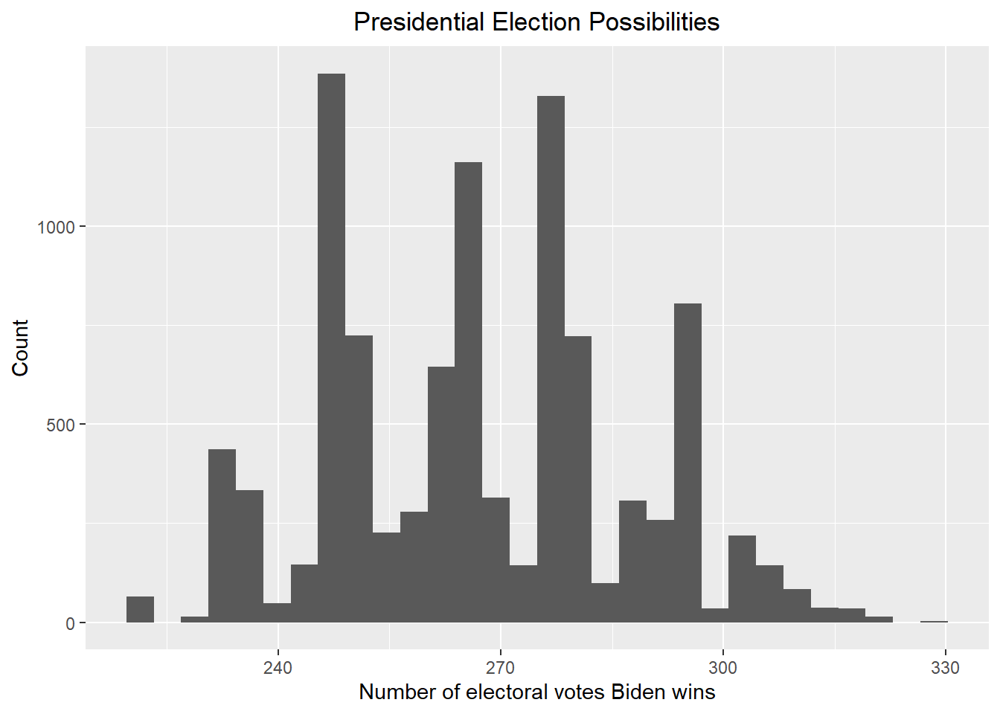
Let’s see now how likely Biden will win against Trump with the new posterior.
print(paste("According to the above plot, the probability that Biden wins the 2024 presidential election is ", round(mean(result_mc >= 270) * 100, 2), "%"))## [1] "According to the above plot, the probability that Biden wins the 2024 presidential election is 44.96 %"Give the 80% credible interval of the 2024 presidential election.
# I use the credible_interval function in the ArchaeoPhases package to get the 80% credible interval
result <- credible_interval(data = result_mc |> pull(electoral_votes_count), level = 0.8, round_to = 0)
print(paste("According to the redible_interval function in the ArchaeoPhases package, the 80% credible interval should be [", result$ci[1], ", ", result$ci[2], "]"))## [1] "According to the redible_interval function in the ArchaeoPhases package, the 80% credible interval should be [ 246 , 295 ]"Now including a bias with average bias_avg and standard
error of bias_sd to add the uncertainty to the election.
Print out the table of states with Biden’s probabilities of winning.
# According to section 16.8.4 in the book, I set bias_sd to be 0.03. I also set bias_avg to be 0.00 since I do not think the bias will go towards either party
bias_avg <- 0.00
bias_sd <- 0.03
updated_results_bias <- updated_results |> mutate(sigma = sqrt(standard_deviation^2/count + bias_sd^2),
B = sigma^2 / (sigma^2 + prior_sd^2),
posterior_mean = B * prior_average + (1 - B) * average,
posterior_sd = sqrt(1/ (1/sigma^2 + 1/prior_sd^2)),
Biden_win_prob = 1-pnorm(0, posterior_mean, posterior_sd)) |> select(-sigma, -B)
updated_results_bias## # A tibble: 23 × 11
## # Groups: race_id [23]
## race_id state average stand…¹ count elect…² prior_…³ prior…⁴ poster…⁵ poste…⁶
## <dbl> <chr> <dbl> <dbl> <int> <dbl> <dbl> <dbl> <dbl> <dbl>
## 1 8759 Ariz… -0.0477 0.0620 6 11 3.49e-2 0.0368 -0.00375 0.0268
## 2 8765 Colo… 0.085 0.0184 2 10 1.34e-1 0.0391 0.105 0.0251
## 3 8768 Conn… 0.118 0.0210 3 7 2.39e-1 0.0383 0.168 0.0247
## 4 8778 Flor… -0.0145 0.0540 6 30 2.07e-2 0.0317 0.00591 0.0241
## 5 8781 Geor… -0.0503 0.0403 8 16 2.10e-2 0.0362 -0.0177 0.0245
## 6 8788 Iowa -0.114 0.0219 6 6 -1.00e-4 0.0303 -0.0553 0.0218
## 7 8794 Illi… 0.112 0.0195 3 19 1.68e-1 0.0310 0.141 0.0223
## 8 8800 Kans… -0.135 0.0240 3 6 -1.05e-1 0.0347 -0.121 0.0239
## 9 8811 Mass… 0.251 0.0442 3 11 3.84e-1 0.0312 0.333 0.0245
## 10 8820 Mich… -0.0275 0.0672 4 15 7.53e-2 0.0385 0.0320 0.0292
## # … with 13 more rows, 1 more variable: Biden_win_prob <dbl>, and abbreviated
## # variable names ¹standard_deviation, ²electoral_votes, ³prior_average,
## # ⁴prior_sd, ⁵posterior_mean, ⁶posterior_sdPrint out the table of states with Biden’s probabilities of winning. If a probability is larger than 99%, show >99%, and if smaller than 1% then show <1%.
# Print out the table of states with Biden's probabilities of winning
temp <- updated_results_bias |> select(state, Biden_win_prob) |> mutate(Biden_win = paste(as.character(round(100 * Biden_win_prob, 2)), "%"))
temp["Biden_win"][temp["Biden_win_prob"] > 0.99] <- "> 99 %"
temp["Biden_win"][temp["Biden_win_prob"] < 0.01] <- "< 1 %"
temp |> select(state, Biden_win)## # A tibble: 23 × 3
## # Groups: race_id [23]
## race_id state Biden_win
## <dbl> <chr> <chr>
## 1 8759 Arizona 44.45 %
## 2 8765 Colorado > 99 %
## 3 8768 Connecticut > 99 %
## 4 8778 Florida 59.68 %
## 5 8781 Georgia 23.44 %
## 6 8788 Iowa < 1 %
## 7 8794 Illinois > 99 %
## 8 8800 Kansas < 1 %
## 9 8811 Massachusetts > 99 %
## 10 8820 Michigan 86.27 %
## # … with 13 more rowsCreate a Monte Carlo simulation using the updated posterior average and standard deviation.
# We now start the Monte Carlo simulation based on the above result
set.seed(1)
B <- 10000
simulation <- function(){
temp <- c()
for (i in 1:length(updated_results_bias$state)){
temp <- c(sample(c(1, 0), size = 1, replace = TRUE, prob = c(pnorm(0, mean = updated_results_bias$posterior_mean[i], sd = updated_results_bias$posterior_sd[i], lower.tail = FALSE), pnorm(0, mean = updated_results_bias$posterior_mean[i], sd = updated_results_bias$posterior_sd[i], lower.tail = TRUE))) * updated_results_bias$electoral_votes[i], temp)
}
sum(temp) + Biden_win_electoral_votes
}
result_mc <- data.frame(electoral_votes_count = replicate(B, simulation()))
result_mc |> ggplot(aes(x = electoral_votes_count)) + geom_histogram() + xlab("Number of electoral votes Biden wins") + ylab("Count") + ggtitle("Presidential Election Possibilities") + theme(plot.title = element_text(hjust = 0.5))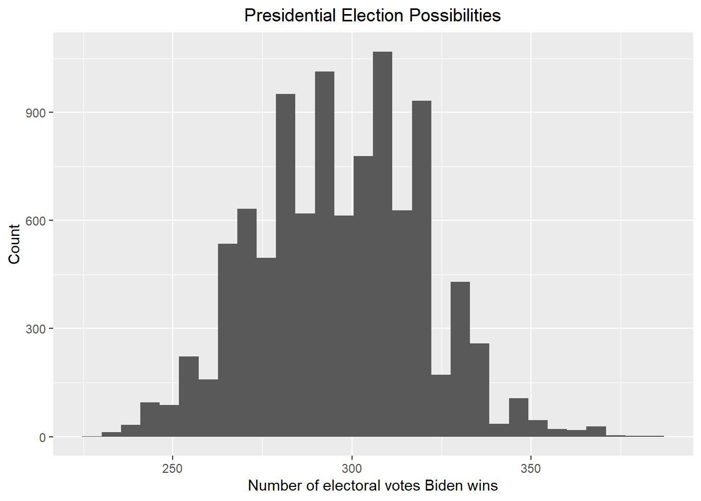
Let’s see now how likely Biden will win against Trump with the new posterior.
print(paste("According to the above plot, the probability that Biden wins the 2024 presidential election is ", round(mean(result_mc >= 270) * 100, 2), "%"))## [1] "According to the above plot, the probability that Biden wins the 2024 presidential election is 87.74 %"Give the 80% credible interval of the 2024 presidential election.
# I use the credible_interval function in the ArchaeoPhases package to get the 80% credible interval
result <- credible_interval(data = result_mc |> pull(electoral_votes_count), level = 0.8, round_to = 0)
print(paste("According to the redible_interval function in the ArchaeoPhases package, the 80% credible interval should be [", result$ci[1], ", ", result$ci[2], "]"))## [1] "According to the redible_interval function in the ArchaeoPhases package, the 80% credible interval should be [ 265 , 322 ]"According to the results above, we can see that Biden’s winning rate increases greatly against Trump in both cases (with or without the bias), and it suggests that it is Biden who are supposed to win the election, which overturns the results generated using our previous prior. This is anticipated since for the last month of the election, people have seen Trump’s performance for the four years but they have not seen Biden’s performance. As a result, the polls will go against Trump and favor Biden. However, in the 2024 presidential election, people will see how Biden performed in the four years and the polls are more likely to go against Biden.
Let’s have another try by assuming that in 2024, people have seen both Biden and Trump’s performance during their presidency and their favor towards both candidates is mitigated, namely they do not favor strongly for either Biden or Trump. Based on this assumption, we can have another prior with the prior mean to be the average of the current poll average and the average of the polls in the last month of the 2020 presidential election, with the prior standard deviation the same as the one in our second try.
updated_results["prior_average"] <- (updated_results$average + updated_results$prior_average) / 2
updated_results## # A tibble: 23 × 8
## # Groups: race_id [23]
## race_id state average standard_devia…¹ count elect…² prior_…³ prior…⁴
## <dbl> <chr> <dbl> <dbl> <int> <dbl> <dbl> <dbl>
## 1 8759 Arizona -0.0477 0.0620 6 11 -0.00640 0.0368
## 2 8765 Colorado 0.085 0.0184 2 10 0.110 0.0391
## 3 8768 Connecticut 0.118 0.0210 3 7 0.178 0.0383
## 4 8778 Florida -0.0145 0.0540 6 30 0.00310 0.0317
## 5 8781 Georgia -0.0503 0.0403 8 16 -0.0147 0.0362
## 6 8788 Iowa -0.114 0.0219 6 6 -0.0571 0.0303
## 7 8794 Illinois 0.112 0.0195 3 19 0.140 0.0310
## 8 8800 Kansas -0.135 0.0240 3 6 -0.120 0.0347
## 9 8811 Massachusetts 0.251 0.0442 3 11 0.318 0.0312
## 10 8820 Michigan -0.0275 0.0672 4 15 0.0239 0.0385
## # … with 13 more rows, and abbreviated variable names ¹standard_deviation,
## # ²electoral_votes, ³prior_average, ⁴prior_sdPerform a Bayesian approach using the updated prior average and standard deviation. First, let’s assume no bias term.
updated_results_no_bias <- updated_results |> mutate(sigma = standard_deviation/sqrt(count),
B = sigma^2 / (sigma^2 + prior_sd^2),
posterior_mean = B * prior_average + (1 - B) * average,
posterior_sd = sqrt(1/ (1/sigma^2 + 1/prior_sd^2)),
Biden_win_prob = 1-pnorm(0, posterior_mean, posterior_sd)) |> select(-sigma, -B)
updated_results_no_bias## # A tibble: 23 × 11
## # Groups: race_id [23]
## race_id state average stand…¹ count elect…² prior_…³ prior…⁴ poster…⁵ poste…⁶
## <dbl> <chr> <dbl> <dbl> <int> <dbl> <dbl> <dbl> <dbl> <dbl>
## 1 8759 Ariz… -0.0477 0.0620 6 11 -0.00640 0.0368 -0.0345 0.0209
## 2 8765 Colo… 0.085 0.0184 2 10 0.110 0.0391 0.0875 0.0123
## 3 8768 Conn… 0.118 0.0210 3 7 0.178 0.0383 0.124 0.0116
## 4 8778 Flor… -0.0145 0.0540 6 30 0.00310 0.0317 -0.00876 0.0181
## 5 8781 Geor… -0.0503 0.0403 8 16 -0.0147 0.0362 -0.0455 0.0133
## 6 8788 Iowa -0.114 0.0219 6 6 -0.0571 0.0303 -0.110 0.00857
## 7 8794 Illi… 0.112 0.0195 3 19 0.140 0.0310 0.115 0.0106
## 8 8800 Kans… -0.135 0.0240 3 6 -0.120 0.0347 -0.133 0.0129
## 9 8811 Mass… 0.251 0.0442 3 11 0.318 0.0312 0.278 0.0198
## 10 8820 Mich… -0.0275 0.0672 4 15 0.0239 0.0385 -0.00525 0.0253
## # … with 13 more rows, 1 more variable: Biden_win_prob <dbl>, and abbreviated
## # variable names ¹standard_deviation, ²electoral_votes, ³prior_average,
## # ⁴prior_sd, ⁵posterior_mean, ⁶posterior_sdPrint out the table of states with Biden’s probabilities of winning. If a probability is larger than 99%, show >99%, and if smaller than 1% then show <1%.
temp <- updated_results_no_bias |> select(state, Biden_win_prob) |> mutate(Biden_win = paste(as.character(round(100 * Biden_win_prob, 2)), "%")) |> arrange(-Biden_win_prob)
temp["Biden_win"][temp["Biden_win_prob"] > 0.99] <- "> 99 %"
temp["Biden_win"][temp["Biden_win_prob"] < 0.01] <- "< 1 %"
temp |> select(state, Biden_win)## # A tibble: 23 × 3
## # Groups: race_id [23]
## race_id state Biden_win
## <dbl> <chr> <chr>
## 1 8768 Connecticut > 99 %
## 2 8794 Illinois > 99 %
## 3 8811 Massachusetts > 99 %
## 4 8860 New York > 99 %
## 5 8869 Oregon > 99 %
## 6 8877 Rhode Island > 99 %
## 7 8765 Colorado > 99 %
## 8 8854 New Mexico > 99 %
## 9 8848 New Hampshire > 99 %
## 10 8905 Wisconsin 64.12 %
## # … with 13 more rowsCreate a Monte Carlo simulation using the updated posterior average and standard deviation.
# We now start the Monte Carlo simulation based on the above result
set.seed(1)
B <- 10000
simulation <- function(){
temp <- c()
for (i in 1:length(updated_results_no_bias$state)){
temp <- c(sample(c(1, 0), size = 1, replace = TRUE, prob = c(pnorm(0, mean = updated_results_no_bias$posterior_mean[i], sd = updated_results_no_bias$posterior_sd[i], lower.tail = FALSE), pnorm(0, mean = updated_results_no_bias$posterior_mean[i], sd = updated_results_no_bias$posterior_sd[i], lower.tail = TRUE))) * updated_results_no_bias$electoral_votes[i], temp)
}
sum(temp) + Biden_win_electoral_votes
}
result_mc <- data.frame(electoral_votes_count = replicate(B, simulation()))
result_mc |> ggplot(aes(x = electoral_votes_count)) + geom_histogram() + xlab("Number of electoral votes Biden wins") + ylab("Count") + ggtitle("Presidential Election Possibilities") + theme(plot.title = element_text(hjust = 0.5))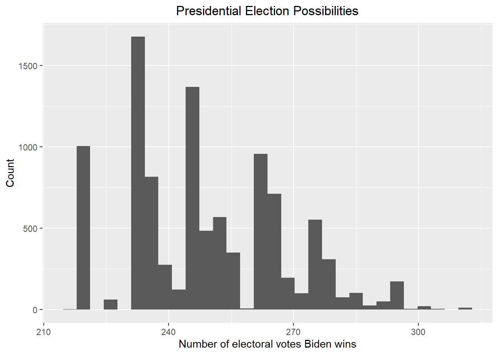
Let’s see now how likely Biden will win against Trump with the new posterior.
print(paste("According to the above plot, the probability that Biden wins the 2024 presidential election is ", round(mean(result_mc >= 270) * 100, 2), "%"))## [1] "According to the above plot, the probability that Biden wins the 2024 presidential election is 15.42 %"Give the 80% credible interval of the 2024 presidential election.
# I use the credible_interval function in the ArchaeoPhases package to get the 80% credible interval
result <- credible_interval(data = result_mc |> pull(electoral_votes_count), level = 0.8, round_to = 0)
print(paste("According to the redible_interval function in the ArchaeoPhases package, the 80% credible interval should be [", result$ci[1], ", ", result$ci[2], "]"))## [1] "According to the redible_interval function in the ArchaeoPhases package, the 80% credible interval should be [ 221 , 265 ]"Now including a bias with average bias_avg and standard
error of bias_sd to add the uncertainty to the election.
Print out the table of states with Biden’s probabilities of winning.
# According to section 16.8.4 in the book, I set bias_sd to be 0.03. I also set bias_avg to be 0.00 since I do not think the bias will go towards either party
bias_avg <- 0.00
bias_sd <- 0.03
updated_results_bias <- updated_results |> mutate(sigma = sqrt(standard_deviation^2/count + bias_sd^2),
B = sigma^2 / (sigma^2 + prior_sd^2),
posterior_mean = B * prior_average + (1 - B) * average,
posterior_sd = sqrt(1/ (1/sigma^2 + 1/prior_sd^2)),
Biden_win_prob = 1-pnorm(0, posterior_mean, posterior_sd)) |> select(-sigma, -B)
updated_results_bias## # A tibble: 23 × 11
## # Groups: race_id [23]
## race_id state average stand…¹ count elect…² prior_…³ prior…⁴ poster…⁵ poste…⁶
## <dbl> <chr> <dbl> <dbl> <int> <dbl> <dbl> <dbl> <dbl> <dbl>
## 1 8759 Ariz… -0.0477 0.0620 6 11 -0.00640 0.0368 -0.0257 0.0268
## 2 8765 Colo… 0.085 0.0184 2 10 0.110 0.0391 0.0951 0.0251
## 3 8768 Conn… 0.118 0.0210 3 7 0.178 0.0383 0.143 0.0247
## 4 8778 Flor… -0.0145 0.0540 6 30 0.00310 0.0317 -0.00429 0.0241
## 5 8781 Geor… -0.0503 0.0403 8 16 -0.0147 0.0362 -0.0340 0.0245
## 6 8788 Iowa -0.114 0.0219 6 6 -0.0571 0.0303 -0.0848 0.0218
## 7 8794 Illi… 0.112 0.0195 3 19 0.140 0.0310 0.127 0.0223
## 8 8800 Kans… -0.135 0.0240 3 6 -0.120 0.0347 -0.128 0.0239
## 9 8811 Mass… 0.251 0.0442 3 11 0.318 0.0312 0.292 0.0245
## 10 8820 Mich… -0.0275 0.0672 4 15 0.0239 0.0385 0.00223 0.0292
## # … with 13 more rows, 1 more variable: Biden_win_prob <dbl>, and abbreviated
## # variable names ¹standard_deviation, ²electoral_votes, ³prior_average,
## # ⁴prior_sd, ⁵posterior_mean, ⁶posterior_sdPrint out the table of states with Biden’s probabilities of winning. If a probability is larger than 99%, show >99%, and if smaller than 1% then show <1%.
# Print out the table of states with Biden's probabilities of winning
temp <- updated_results_bias |> select(state, Biden_win_prob) |> mutate(Biden_win = paste(as.character(round(100 * Biden_win_prob, 2)), "%"))
temp["Biden_win"][temp["Biden_win_prob"] > 0.99] <- "> 99 %"
temp["Biden_win"][temp["Biden_win_prob"] < 0.01] <- "< 1 %"
temp |> select(state, Biden_win)## # A tibble: 23 × 3
## # Groups: race_id [23]
## race_id state Biden_win
## <dbl> <chr> <chr>
## 1 8759 Arizona 16.89 %
## 2 8765 Colorado > 99 %
## 3 8768 Connecticut > 99 %
## 4 8778 Florida 42.94 %
## 5 8781 Georgia 8.21 %
## 6 8788 Iowa < 1 %
## 7 8794 Illinois > 99 %
## 8 8800 Kansas < 1 %
## 9 8811 Massachusetts > 99 %
## 10 8820 Michigan 53.04 %
## # … with 13 more rowsCreate a Monte Carlo simulation using the updated posterior average and standard deviation.
# We now start the Monte Carlo simulation based on the above result
set.seed(1)
B <- 10000
simulation <- function(){
temp <- c()
for (i in 1:length(updated_results_bias$state)){
temp <- c(sample(c(1, 0), size = 1, replace = TRUE, prob = c(pnorm(0, mean = updated_results_bias$posterior_mean[i], sd = updated_results_bias$posterior_sd[i], lower.tail = FALSE), pnorm(0, mean = updated_results_bias$posterior_mean[i], sd = updated_results_bias$posterior_sd[i], lower.tail = TRUE))) * updated_results_bias$electoral_votes[i], temp)
}
sum(temp) + Biden_win_electoral_votes
}
result_mc <- data.frame(electoral_votes_count = replicate(B, simulation()))
result_mc |> ggplot(aes(x = electoral_votes_count)) + geom_histogram() + xlab("Number of electoral votes Biden wins") + ylab("Count") + ggtitle("Presidential Election Possibilities") + theme(plot.title = element_text(hjust = 0.5))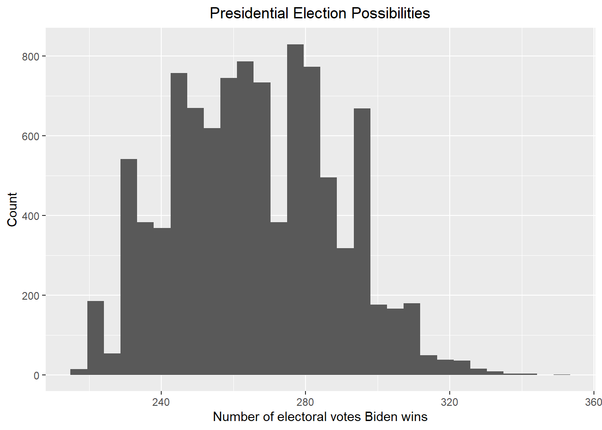
Let’s see now how likely Biden will win against Trump with the new posterior.
print(paste("According to the above plot, the probability that Biden wins the 2024 presidential election is ", round(mean(result_mc >= 270) * 100, 2), "%"))## [1] "According to the above plot, the probability that Biden wins the 2024 presidential election is 42.89 %"Give the 80% credible interval of the 2024 presidential election.
# I use the credible_interval function in the ArchaeoPhases package to get the 80% credible interval
result <- credible_interval(data = result_mc |> pull(electoral_votes_count), level = 0.8, round_to = 0)
print(paste("According to the redible_interval function in the ArchaeoPhases package, the 80% credible interval should be [", result$ci[1], ", ", result$ci[2], "]"))## [1] "According to the redible_interval function in the ArchaeoPhases package, the 80% credible interval should be [ 231 , 287 ]"I believe that the result above is more reasonable. It is sometimes the case that a president lose the midterm election but win in the presidential election two years later. Since I think the polls in 2020 favor Biden and the polls in 2022 favor Trump, by mitigating the polls results, we should approach the results better.